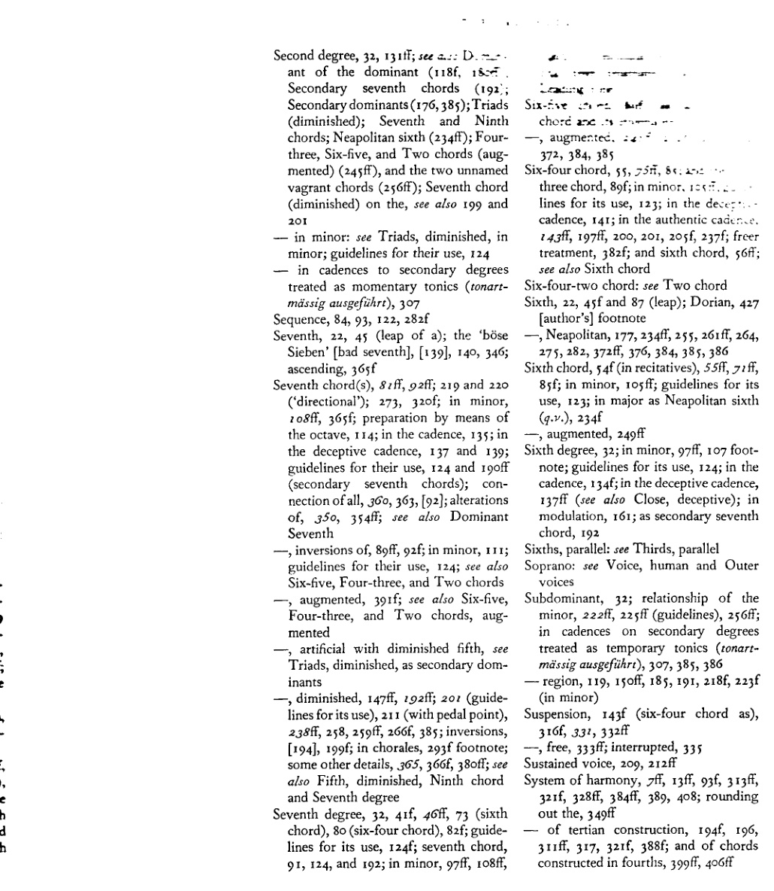

Topical index
主题索引
[由阿尔班·贝尔格为第一版编制（supra，第 3 页 . . . . . . . . . . . . . . 在第三修订版中扩充并补充了页码引用。]
（斜体数字表示该主题作为章节标题、副标题亦见于目录的页码。）
变化和弦，179、222、350ff；参见 三和弦、七和弦、九和弦等。
女低音：参见 声部
先现音，331、341
人工减与增三和弦、七和弦等：参见 三和弦、七和弦等。
无调性，128、432f [作者脚注]
低音：参见 声部与外声部的旋律进行；数字低音，13f、37f、103、389；音符与根音，41、52ff、56ff、75ff、116、176、385
终止式[正格 — Kadenz；参见 收束 — Schluss]，118f、125ff、134ff、143ff、157ff、223、247、305ff；通过省略中间步骤的简写，359f；通过使用副属和弦的扩展，178、183；小下属调，222、230f；经过音，345f [?]、[296]；游移和弦，369f；关于音阶音级，参见 音级及其单独条目
坎比亚塔，430 [作者]脚注
换音（Wechselnoten），430 [作者]脚注，296、303f、331、331f、340f
众赞歌和声编配，14、286、289ff
和弦，13ff、26ff；排列法，33ff；123（使用准则）；重新解释，156；自然音，23、27、31ff；非自然音，155、179、385f；不完整的，83ff、86；五音及以上的，311f、368、388f、390ff（全音），399 及 404ff（四度叠置），411、418f
半音体系，102（交叉关系），159 脚注（在转调中），及副属和弦，175、176、184f；在连接小下属调领域和弦时，227f；与持续音，210；半音经过音，337；半音邻音（Wechselnoten），341；以半音引入的和弦音，229f、259f；半音音阶，229、247、271 脚注，339、384、387ff、394、432 [作者]脚注，420
教会调式，25 脚注，28f、95ff、387f、432 [作者]脚注；136 脚注（变格终止）；290 脚注（众赞歌）；与副属和弦，175ff [含作者脚注，427]、188
收束[或终止式 — Schluss；参见 终止式 — Kadenz]，83（导音），103f（小调），125ff；正格、完全与半收束，305ff；变格，136、296（在众赞歌中），305ff、359；在副音级上，307；弗里几亚，307；当作独立调处理的音级（tonartmässig ausgeführt），306、307、388—，阻碍的，118f、136ff、307；在转调中，157、273；来自副属和弦，428 [作者]脚注、181；来自减七和弦，193 及 201；与持续音，214；在众赞歌中，292f；来自九和弦，347、358
共同音，39f、51f、85、112
协和音：参见 不协和音
对位法，13f、26f、203、312；425 及 388f [作者]脚注（复调）
交叉（或虚假）关系，98、102；关于减七和弦，195 及 201；关于小下属调领域和弦，226
音级，32f、39f、100 脚注（“升高与未升高”），199f、329、330、389；在小调中，99—，多样化使用（Stufenreichtum），223、370；参见 第一、第二 . . . 第七音级
436 主题索引
—，当作独立调处理（tonartmässig ausgeführt），179、212（带持续音），175（在转调中），291ff（在众赞歌中）；306、307 及 388（在终止式中）
不协和音及其处理，46ff、51f、66、93f、137ff、146；在六四和弦中，47ff、56ff、75ff、143ff；在七和弦中，81ff；在增三和弦中（参见 增三和弦），106f；在九和弦中，346；非和弦音，322ff；更自由的处理，142f、320f、386；参见 经过音（Durchgang）
—，与协和音，18、21f、68 脚注、70、316、320f、329、386、409
属音，32f、49f、191（“指南”）；（参见 属七和弦）；其转换（重新解释），在转向第三和第四五度圈的转调中，209f；经过属音，209ff、212；停留于属音，参见 持续声部与持续音；重复属音，212f；参见 副属和弦、下属音
—，属音的属音，118、180ff；与持续音，211、212
— 区域，32f、118f、150f、185；与下属音区域，223
属七和弦，134；在假终止中，137f、139、142；在[正格]终止中，145、205f；在转调中，165；作为副属和弦，177；作为游移和弦，248、385；与全音和弦，391、397；参见 七和弦、五级及属音
属七-九和弦，347
和弦音的重复，36f、51（在减三和弦中），420；三音的重复，59、73、85f、91、108
八分之一音，25
等音变换，426f [作者]脚注、194、197ff 及 201（减七和弦）、244、246、249、264、265f、351f
异国情调[音乐]，21、25 及 [作者]脚注、423ff、387、390
五级，32f、130、131ff、136f；与数字五，318f；参见 属音、收束及终止式
五度（五度音程），22、26、318f（与数字五）；减五度，22、46、49ff、146f；参见 二级、七级及减三和弦
—，平行五度，10、60ff、68 脚注（在现代音乐中），112ff、148、331、334（带经过音）
—，五度跳进，44；减五度，参见 三全音；根音进行为五度，参见 根音进行
—，五度圈，154ff、207 脚注、350 脚注，参见 转调
一级，32f、42f、55f、74；作为副七和弦，192；作为六四和弦（见该条）；参见 根音及收束
四声部写作，33ff、40
四级，32；在终止式中，131ff；在变格终止中（132），136；在假终止中，136f；作为副属和弦，183；作为副七和弦，192；减七和弦与四级，194；参见 下属音
四三和弦，89ff（参见 七和弦及其转位）
—，增四三和弦，245、248ff、261、264f、372、385
四度（四度音程），22、75；利底亚四度，427 [作者]脚注
—，以四度构建的和弦，399ff
—，平行四度，64f
—，四度跳进，44；增四度，参见 三全音；根音进行为四度，参见 根音进行
根音（Grundton——根音或主音），21f、23ff、32、49f；与低音（参见 低音）；与调性，27f、127ff、150ff、372、432 [作者]脚注；根音的变化，193、234f、246、354；根音的省略，113、117、137、193ff、246；参见 音
指南（参见 “第三版序言”，上文，4），123ff；关于根音进行，123，和弦的使用，123ff，声部进行，125；关于副属和弦的使用，188，副属七和弦的使用，
主题索引 437
190，人为增大的、小调与减三和弦，190f，减五度七和弦，191；减七和弦的用法，201；小下属调区域和弦的用法，225ff
和声-旋律交互：见 旋律-和声交互 旋律的和声配置，133，286ff，287f，289f；另见 众赞歌和声配置 圆号五度，62
中介调，171ff，179，182，208，271f（含脚注 271）；另见 副属和弦 不协和音程，22，44f，46f，97，125；与减七和弦，196f，220f；与游荡和弦，265f；与小下属调区域和弦，226，229 转位：见 三和弦、七和弦与九和弦；其历史起源，54
最短路径法则，39，[84]，112 导音，73，83，95，177，185，188，[191]；在小调中，97f；作为延留音，333
大调，23ff，387ff；与小调，28f，95f，228，338，387ff；另见 同名大调与小调之间的关系 小节（Takt），202ff —，拍子，204ff，209f（含持续音），300（在众赞歌中） 中音，32 外声部的旋律进行，43ff，54，59，115，122f，[125]，365；女高音，83，84，217；低音，43，56ff，74f，87f，106，209 旋律-和声交互，26f，33f，267，285，310f，329，331，354，389，393 旋律化（Melodisieren），14（202f） 旋律，13，26f，35，43f，76f [及 78]（六四和弦），148f，202f；在转调中，217；在众赞歌中，289f；装饰音（Manieren），331f，333，343
微分音（八度的更细分割）与复调，423ff [作者脚注] 中声部，125；另见 声部 小调，95ff，124f（准则）；终止式，136f；音阶，97ff，229，387ff；与大调，见 大调；三和弦，见 三和弦 转调，14f，150，153ff，207，230f，268；使用副属和弦，178，183；使用减七和弦，196f；使用半音经过音，338；使用增三和弦，244f，269ff；额外的转调方案，369ff — 上行第一五度圈，155ff，168ff；下行第一五度圈，166f；上行第二五度圈，271ff；下行第二五度圈，271f，273ff；上行第三及第四五度圈，207ff，217f，374ff；下行第三及第四五度圈，218ff，374ff；第五及第六五度圈，276ff，372ff；第七、第八及第九五度圈，284f，374ff 声部进行，46f；以四分音符或八分音符，205f，228，275，296（众赞歌），343f，379；平行、斜向及反向，60，66 脚注，65ff，112（另见 平行五度及平行八度） 莫扎特五度，62，246
[邻音型：见 换音] 中和弦，150f，153，156（见 转调） 九度，22，358；在四度叠置和弦中，405f 九和弦，10，311，320f，345ff；转位，248，345ff；与减七和弦，192ff，238，366f，380，385；与阻碍终止，137；作为全音和弦，392；变音，350，354f，358 非和弦音，309ff，386 记谱法（Orthographie），426f [作者]脚注，259f，352，379f，387
八度，22；平行八度，60ff，86，112f，337（含经过音）；跳进，45，74f，144
438 主题索引
奥尔加农（于五度与四度），63 脚注，65f
装饰音（Manieren），47f，331ff；作为不协和音的解释，137f，146，320，322
外声部，44（另见 低音部与高音部）；其旋律进行，参见
泛音，20f，23ff，36，46f，53；在六和弦与六四和弦中，54 及 56ff；与调性，151；与副属和弦，176；与非和弦音，312，318（数字五），319f；与四度叠置和弦，399
[平行三度、四度、五度、六度、八度、同度：见各相应音程条目]
经过（Durchgang），46ff；六四和弦，78ff；七和弦，81，138，146；非和弦音，322ff，330；[和弦] 与持续音，209f
经过音，10，47ff，331，336ff；在众赞歌中，296，303；另见 不协和音及其处理
持续音，205，209ff
乐句（Sätzchen），14f，42ff
音高：见 音的维度
枢纽音（Wendepunktgesetze），98f，100ff，124f（准则）；在转调中，159f，168，208，214（持续音）；与副属和弦，176f；在中断的延留音中，335
滑音，47
和弦排列法，密集与开放，36ff，40，84，214（与持续音），304（在众赞歌中）；六音及以上和弦，417ff，421；八度、五度与三度，38 及 40
四分音，25，423f [作者]脚注
和弦之间的关系，228（三度与五度关系），231，385f；各调之间的关系，154ff，223ff，269，387f；同名大小调之间的关系，207ff，218f，371f，387ff；大调与其关系小调之间，171f，207ff，387ff
和弦的重复，42，54f，[83]，157ff（在转调中），302f（在众赞歌中）
— 外声部中音的重复，74，84，122f
— 音进行的重复，84；见 模进
节奏，13，202，203ff，209f（与持续音），217，365；在众赞歌中，289 [另见 小节]
根音进行，38f，115ff，123（准则），163（在转调中），211 及 214（与持续音），226（小调下属音区和弦）。特别注意“上行”与“下行”进行（119，123）；
根音按二度进行（“跳过”），117ff，123，193；在终止式中（IV V I 及 V IV I），131f，134；与副属和弦，188；
根音按三度进行，116f，119f，123，188；
根音按四度上行，116f，123；与减三和弦，49f，100f；七和弦，81f，124，208；六五和弦，89；减七和弦，195f；增三和弦，241f；九和弦，346；副属和弦，183，188，385；
根音按四度下行，119f 脚注，123，188
根音按五度进行，见 根音按四度进行
音阶，23ff，25ff [及 423ff 作者脚注]（五十三音的），423ff（音级的多样性）；387ff；389 及 432f [作者]脚注（多调性的半音音阶）；393f，395f；作为旋律，76f，78f，229，260，332，337，339f；另见 半音音阶与全音音阶
二度，22；增二度，194；级进，333；根音按二度进行，见 根音进行；增二度，229
副属和弦，175，177ff，188ff，及 191f（使用准则），384ff，386；在小调中，183；与减七和弦，192ff；与持续音，210f；与增六五和弦，246f；与九和弦，347
第二级, 32, 131ff; see a... D. --. ant of the dominant (118f, 18<<... 副七和弦 (192; 副属和弦 (176,385); 三和弦 (减); 七和弦与九 和弦; 那不勒斯六和弦 (234ff); 三 四, 五六与二和弦 (aug- mented) (245ff), 及两个未命名 的流浪和弦 (256ff); 七和弦 (减) 上的, 另见 199 及 201 — 在小调中: 见 三和弦, 减, 于 小调; 使用准则, 124 — 在终止式中，将副音级 当作临时主音处理 (tonart- mässig ausgeführt), 307 模进, 84, 93, 122, 282f 七度, 22, 45 (跳进); “böse Sieben” [恶劣七度], [139], 140, 346; 上行, 365f 七和弦, 81ff, 92ff; 219 及 220 (“导向性的”); 273, 320f; 在小调中, 108ff, 365f; 以八度 预备, 114; 在终止式中, 135; 在 阻碍终止中, 137 及 139; 使用准则, 124 及 190ff (副七和弦); 连- 接全体, 360, 363, [92]; 变音 的, 350, 354ff; 另见 属 七 —, 转位, 89ff, 92f; 在小调中, 111; 使用准则, 124; 另见 五六、三四及二和弦 —, 增, 391f; 另见 五六, 三四及二和弦, aug- mented —, 含减五度的人为[和弦], 见 三和弦, 减, 作为副属 和弦 —, 减, 147ff, 192ff; 201 (使用准- 则), 211 (含持续音), 238ff, 258, 259ff, 266f, 385; 转位, [194], 199f; 在众赞歌中, 293f 脚注; 其他细节, 365, 366f, 380ff; 另见 五度, 减, 九和弦 及 七级音 七级音, 32, 41f, 46ff, 73 (六 和弦), 80 (四六和弦), 82f; 使用准- 则, 124f; 七和弦, 91, 124, 及 192; 在小调中, 97ff, 108ff,

Six-... ... chord a... ... —, augmente... ... 372, 384, 385 四六和弦, 55, 55ff, 8... ... three chord, 89f; 在小调中. 1... ... lines for its use, 123; 在 dece... ... cadence, 141; 在正格 cad... ... 143ff, 197ff, 200, 201, 205f, 237f; 更自由的 处理, 382f; 及六和弦, 56ff; 另见 六和弦 四六二和弦: 见 二和弦 六度, 22, 45f 及 87 (跳进); 多利亚, 427 [作者] 脚注 —, 那不勒斯, 177, 234ff, 255, 261ff, 264, 275, 282, 372ff, 376, 384, 385, 386 六和弦, 54f (在宣叙调中), 55ff, 71ff, 85f; 在小调中, 105ff; 使用准则 , 123; 在大调中作为那不勒斯六和弦 (g.v.), 234f —, 增, 249ff 六级音, 32; 在小调中, 97ff, 107 脚- 注; 使用准则, 124; 在 终止式中, 134f; 在阻碍终止中, 137ff (另见 终止式, 阻碍); 在 转调中, 161; 作为副七 和弦, 192 平行六度: 见 平行三度 女高音: 见 人声 及 外 声部 下属音, 32; 小调中的关系, 222ff, 225ff (准则), 256ff; 在副音级的终止式中， 当作临时主音处理 (tonart- mässig ausgeführt), 307, 385, 386 — 区域, 119, 150ff, 185, 191, 218f, 223f (在小调中) 留音, 143f (作为四六和弦), 316f, 331, 332ff —, 自由, 333ff; 中断, 335 持续声部, 209, 212ff 和声体系, 7ff, 13ff, 93f, 313ff, 321f, 328ff, 384ff, 389, 408; 完善 该体系, 349ff — 三度叠置结构的, 194f, 196, 311ff, 317, 321f, 388f; 及四度结构 和弦, 399ff, 406ff
440 主题索引
—，平均律，21、25及后页、28、47、427 [作者]脚注，314、320
[ temperament：见 System, tempered ] Tenor：见 Voice, human 及 Middle voice 三度音，32、80、106f（小三度），134（[正格]终止式中），190f（减五度的七和弦），192（副七和弦） 三度，22、26、295；小三度，194、241；大三度，241；另见三度叠置体系 —，平行三度，65f、67脚注 —，三度根音进行：见 Root progressions 四分音，25 通奏低音：见 Bass, figured 调性，9、27及后页、70、127及后页、150及后页、154、222及后页、385f、387及后页、432f [作者]脚注；与游移和弦，247、369f；与中介调，271脚注 —，游移调性（schwebend），128f、153；与悬置（或消解 — aufgehoben），370、383f、394及后页 音，19及后页、23及后页、320、385；音的维度，321、421f；升高与降低，见 Chromaticism 及 Altered chords；另见 Doubling 及 Repetition 音色：见 Tone, dimensions of 主音，32f（见 Fundamental tone） —，主-属和声配置，299 —，将另一音级 momentary treatment of another degree as（tonartmässig ausführen）：见 Degree 转调，通过将转调至四度圈的转调移调至五度三度圈，217f；终止式的转调，306 三和弦，主与副，26、27、32f、123f（使用指南），428f [作者]脚注、175及后页；自然音三和弦，32；三和弦的连接，38及后页、42及后页、71及后页、360及后页；小调中的三和弦，99及后页、177、191（人工小三和弦[属音上]的使用指南）；三和弦的变音，350及后页；三和弦的转位，52及后页、105及后页；见 Sixth chord 及 Six-four chord； —，增三和弦，99、106f、124（使用指南）；161（转调）；作为副属和弦，178、385；人工增三和弦（使用指南），190f，调性（tonartmässig ausgeführt）终止式中，307；作为游移和弦，196、238、241及后页、260、264、384；另见全音和弦，391、392f —，减三和弦，32、46、49及后页、124（使用指南）；小调中的II与VII，99、108；作为副属和弦，177、191（使用指南）；191（人工减三和弦）；225f（与小下属和弦的关系）；307（调性[tonartmässig ausgeführt]终止式中）；带持续音，211；另见 Second degree 及 Seventh degree 颤音，340 特里斯坦和弦，257f 三全音，73f、114 十二音列：见 Chromatic scale 二和弦，89及后页、124（另见 Seventh chord 及其转位） —，增二和弦，245、248f、261、264、372、385
同度，平行同度，63及后页、65f；另见 Octaves, parallel 上方声部：见 Outer voice
游移和弦，134、247f、257及后页、366、385；众赞歌中，293f脚注；带经过音，338；与游移（schwebend）[或悬置（aufgehoben）]调性，384；另见减七和弦（195f、238及后页）、增三和弦（243）、九和弦（348）、全音和弦（397）等，以及II级上的两个无名和弦，255及后页、265 人声，34及后页、37、40、125 声部进行，13f、[39]、40f 及 50（声部交叉）、43及后页、50及后页、53f（带转位）、63f、67f、115脚注、[125]、185 及 258f（半音）、194 及 196f（减七和弦）、202f、225、331；另见 Melody、Fifths and Octaves, parallel 等 音量：见 Tone, dimensions of
全音和弦与全音阶，387、390及后页；处理，397f；与四度叠置和弦，406